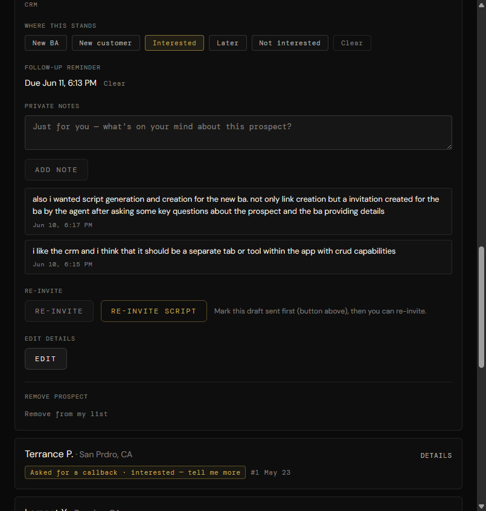
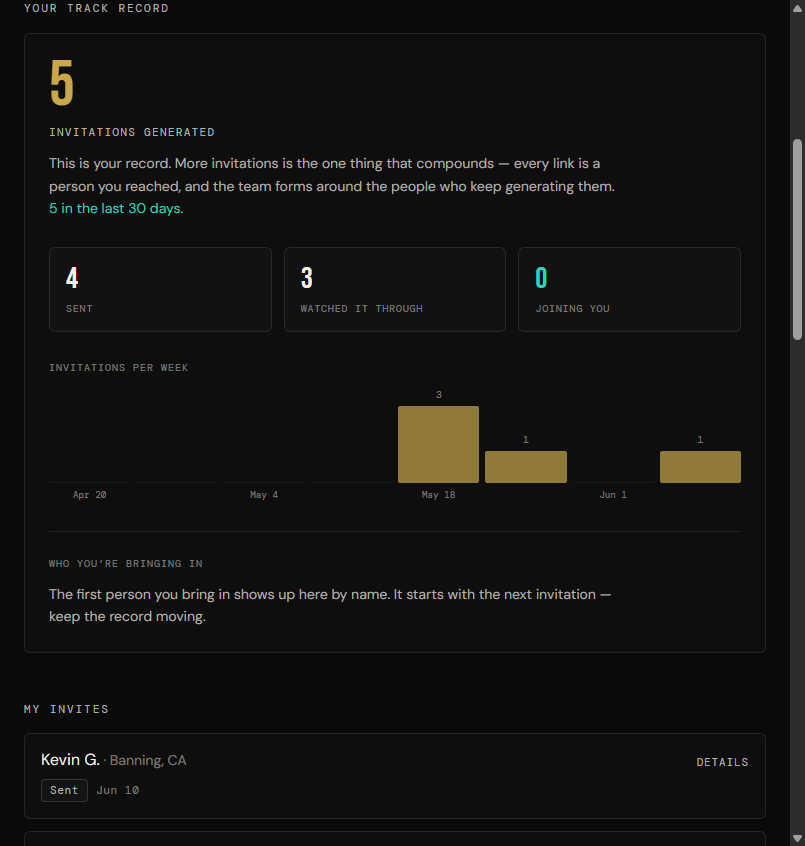

Script generation for new BAs
The system should do more than create a link. The agent should ask key questions about the prospect and the BA's context, then create the invitation for the BA.
Printable map of the current Brand Ambassador cockpit, the invitation path connected to it, and the two cockpit notes that should shape the next implementation.
The system should do more than create a link. The agent should ask key questions about the prospect and the BA's context, then create the invitation for the BA.
The inline CRM is useful, and the next product shape should make CRM a separate tab or app tool with full create, read, update, and delete capabilities.
Welcome message and primary "Invite someone" action. Sends the BA to `/invitations`.
Total invite rows.
Rows marked with "I sent this."
Video complete or deeper progress.
Prospects who raised a hand.
Terminal joined status.
Urgency list from callbacks, due follow-ups, and expiring windows. Click jumps to the matching invite row.
Invitation activity proof: generated, sent, watched through, joining you, and invitations per week.
Every prospect row. Expand for link, saved message, activity, sent marker, and CRM.
Name, city, state, status badge, position number, created date.
Details toggle opens the working area.
Their link and copy button.
Saved message and source: self, Ivory, or ScriptMaker.
Activity timeline: sent, video completed, callback requested.
"I sent this" records the BA's manual send.
Disposition tags: New BA, New customer, Interested, Later, Not interested.
Follow-up reminder with clear action.
Private notes, append-only.
Re-invite and re-invite script.
Edit details with audit reason.
Remove prospect with required reason.
Manual CRM create exists in API and should be surfaced in the separate CRM tool.
`/invitations`: BA writes the invitation manually.
`/video-library`: ScriptMaker drafts from a watched product video.
`/ivory`: relationship engine feeds a prospect into invitations.
`POST /api/scriptmaker/draft` creates compliant copy when ScriptMaker is used.
`POST /api/invitations` mints the prospect and token.
Link Ready page gives the link and lets BA mark it sent.
Prospect opens `/p/:token`.
Video events update the token rail.
Callback request creates a cockpit action.
Counts update.
Activity appears on the invite row.
CRM note, follow-up, tag, re-invite, edit, and remove happen from the row.
Expanded invite row showing CRM notes, follow-up, disposition, and re-invite area.

BA activity record with generated invitations, sent, watched through, joining you, and weekly chart.
